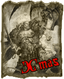

| |
Modell galéria
Ide mindenki munkái
kikerülhetnek, aki veszi a fáradtságot és
beküldi.*
|
|
Batári Csongor vagyok már 5 éves koromban
megismerkedtem egy rokonomon keresztül a
warhammer-rel ezáltal a festéssel is. Azóta
kisebb nagyobb szünetekkel festegetek,
komolyabban foglalkozni a témával most
kezdek el szerintem. Páréves kihagyás után
2008 õszén ragadott magával újból a
modellezés, innentõl a karrierem
folyamatosnak tekinthetõ. Az azóta
keletkezett figuráimat tartottam érdemesnek
a mások általi megtekintésre, ezek közül is
szelektáltam.
Csongor |
|
Sziasztok! A
figurák festését kb. 4 éve kezdtem el. De ebbõl inkább csak az
utolsó 1 év ami számit mert akkor kezdtem el Citadel festéket
használni és mertem kipróbálni az új technikákat. Tehát amit
lattok az 1-1,5 év eredménye. Mindenfélét szeretek festeni de
mivel a 2 seregem Chaos (40K) és High Elves (WHFB) ezért inkább
erre fele orientálódom. (de majd jönnek gobbók (WHFB), az is mókás
lesz :)
DASCO |
|
|
|
My
name is Fabian Niehl. I´m 20 years old
and I live in South Germany (near
the lake of Konstanz). I started to paint
Warhammer in this year (2004).
I work as a goldsmith, so i have no
problems with small things... In my spare
time I make sports, go to an evening
school and paint warhammer miniatures. :-)
Fabian Niehl |
|
Öt
éve festek, de csak másfél éve kezdtem
el komolyabban festeni. Kezdetben
AD&D-s ólomfigurákat festettem. Közel
egy éves kiha- gyás után, döntenem
kellett: kidobom õket vagy kezdek velük
vala- mit. Közben megismerkedtem egy vérbeli
modellezõvel, aki nagyon sokat segített
bár õ tankokat festett. Miután kipróbáltam
a Citadel festékeket, kezdtem átállni rájuk,
egyre több figurát, festéket és
ecsetet vettem. Mára már annyira benne
vagyok, hogy abba se hagyhatnám.
Goat |
|
|
Kisebb-nagyobb
kihagyásokkal több mint 20 éve
foglalkozom ma- kettezéssel. A kezdeti
fõ csapásirány a sci-fi (elsõ sorban
Star Wars, Predator és Alien) témájú
jármûvek és figurák készítése,
konvertá- lása és festése volt. Ezek
mellett mintegy levezetésképp
festegettem Ral Partha, Metal Magic és
West-End Games ólomfigurákat is. Mostanában
fõleg a Gyûrûk Ura világa ihlette diorámákat
készítek. A WH világából az ûrgárdisták
ragadtak meg, és bár nem játszom,
festeni mindenképpen szeretnék ilyeneket
is.
LV-426 |
|
Cirka
16 éve festek. Nagyon sokáig csak a
Tamiya II. Világháborús német figuráival
és harci jármûveivel foglalkoztam, a
Warhammer 40K-ba kb. másfél éve
szerelmesedtem bele. Hûen szolgálom az
Is- tencsászárt, egy gigantikus Imperial
Fists sereg felállításán dolgoz- om. Néha,
1-1 figura erejéig kirándulok a Gyûrûk
Ura világába is. A játékot nem játszom,
a szabályokat nem ismerem, kizárólag a
festés és a dioráma építés érdekel.
Martin |
|
|
Üdv
mindenkinek! Egy és fél éve festek, de
csak 2003 decemberétõl
kezdtem Citadell-el dolgozni. WHFB-vel és
Warhammer 40.000-el is egyaránt
foglakozom és játszom. Fõleg az
aprólékos munkát szeretem (sisakra
mintákat, stb.). De majd ti is meglátjátok...
Orhi |
|
Körülbelül 12
éve festek, de nem volt folyamatos a pályafutásom,
ebben voltak évek, amik teljesen
kimaradtak. Elsõ találkozásom a figurás
játékokkal még a megboldogult FMH vasárnapi
szerepjáté- kos klubjában történt.
Kezdetben 40k Orkokat gyûjtöttem, de ha-
mar egy WHFB Dwarf sereget kezdtem építeni
inkább. Ennek meg- felelõen jelenleg is
a legtöbb festett figurám törpe. Ezzel
párhuza- mosan Káoszt kezdtem gyûjteni
40k-hoz, majd késõbb Mordheimhez
Skaveneket és Undeadeket.
Stark |

|
|
|
1990 óta foglalkozom szerepjátékkal.
2003 év elején valami meg- pattant bennem,
és beindultam a táblás stratégiára.
Magát a stra- tégiai játékot egyébként
igencsak szeretem. Ekkor fogtam elõször
ecsetet a kezembe, és ekkor vettem néhány
találomra kiválasztott figurát.
Eleinte szerepjáték harci helyzetekben
karakterek és ellen- felek helyzetének
visszaadására használtam õket, majd
egyre job- ban elmélyültem a Warhammer világában.
Most játszom az elsõ fantasy csatáimat,
birodalmi színekben. Babák mellett
tereptárgya- kat is készítek, festek.
Zotyo |
|
Nagyjából 3 éve festek, kisebb-nagyobb
kihagyásokkal. Mostanában inkább a sötét
elfekre vagyok rákattanva, de van egy kisebb
káosztörpe csapatom, meg egy hordányi
nemes elfem. Úgy két és fél éve festek
Citadell festékkel! Mostanában elég sokat szoktam
harcolni a sötét elfek oldalán!
Xanatos |
|
|  |
Sziasztok!
2002-ben kezdtem el foglalkozni a hobbival,
rögtön a WH40k-val; de azelõtt még
sose festettem maketteket.
Azóta is ez a legjobb idõtöltésem,
jelenleg ûrgárdistákat és orkokat gyûjtök;
ill. tereptárgyak készítésével is
foglalkozom. Néhány diorámát is
terveztem, de megépíteni õket még nem
volt idõm. Majd egyszer talán...
Xmas |
|
Sok-sok
éve foglalkozom Warhammer-rel és festek
figurákat. De igazából csak az utóbbi
pár év termése, ami említésre méltó,
így ezek szerepelnek a galériában is.
Sajnos nem vagyok túl aktív festés ügyileg,
ezért a kevés mennyiség, de ezen a jövõben
azért javítani szeretnék! ;) Eddig fõleg
Orkokat és Goblinokat festettem, de
mostanság a 40k-s Dark Angels seregem a fõ
csapásirány. Emellett egy Mordheimes
Skaven banda is be van tervezve.
Rince |
 |
* Egyetlen dolgot
szeretnék csak ezzel kapcsolatban kérni. Ha a képeid
már szerepelnek valahol máshol, akkor lehetõleg
azokat már ne küld be. Ugyanis a cél, egy
teljesen egyedi galéria létrehozása lenne, és
amúgy sincs sok értelme egy galériának, ha
csupa máshol is látható képpel van tele. Köszi!
- Rince
|
|